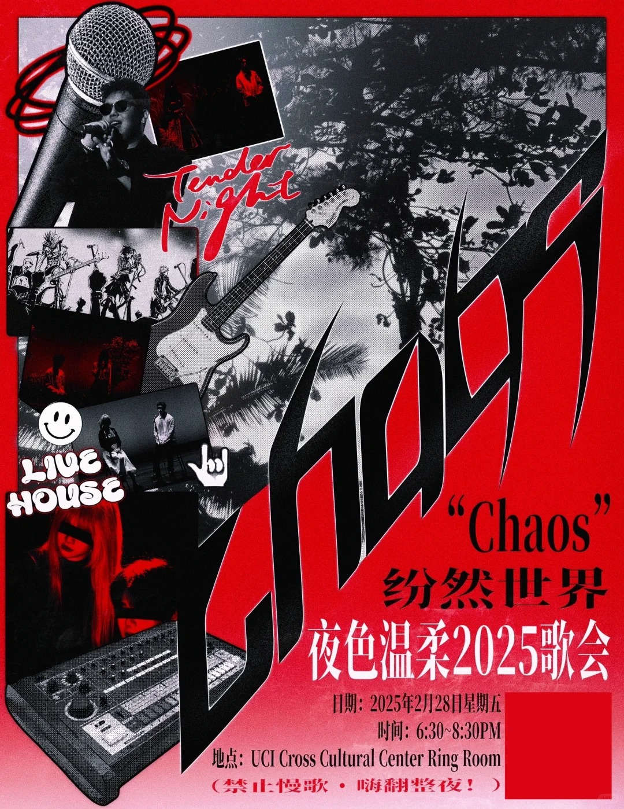

Every clash and uncertainty sparks new energy.
Every wild disorder gives birth to new order.
Music is fireworks of emotion. Chaos is the fertile soil of creativity.
This livehouse breaks the rules and releases the rawest power of sound and self.
It’s not mess, it’s undefined freedom—our future.
Tonight, we invite you to:
step into the unknown, surf endless waves of sound,
and find resonance in chaos.
6:30 – 7:30 PM
《向天再借五百年》 – 韩磊
《梦特别娇》 – 回春丹
《初恋》 – 官仕玮
《Vivienne Freestyle》 – 原创
《被驯服的象》 – 常诚壹
《Toxic》 – Britney Spears
《第一天》 – 孙慧茗
《火鸟功+我太傻+Melody》 – 阿信
《Unravel》 – TK from 凛として時雨
《皮囊》 – 潘敬杨
7:45 – 8:30 PM
《丸之内虐待狂》 – 东京事变
《问风》 – 裘德琳娜万德松
《Superwomen》 – 曹格
《盛夏光年》 – 五月天
《same old song》 – 原创
《影痕》 – 周佳豪
《海芋恋》 – 萧敬腾
《问风》 – 任静怡 feat. 孟玥 徐晟
吴闻之 – Susan – 李思衡 – 陈宏政
Ensemble
This page reflects the wild and energetic vibe of Tender Night’s experimental shows. Loud, bold, and full of surprises.
